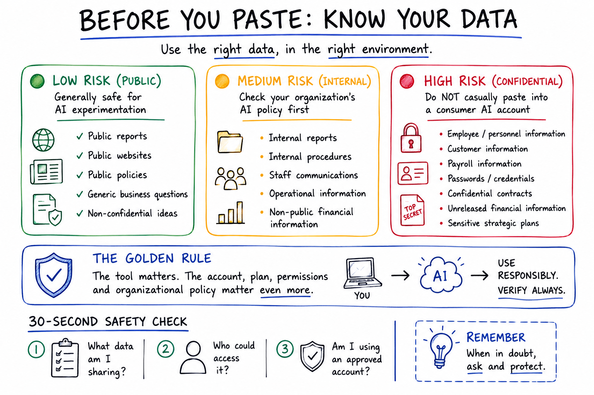
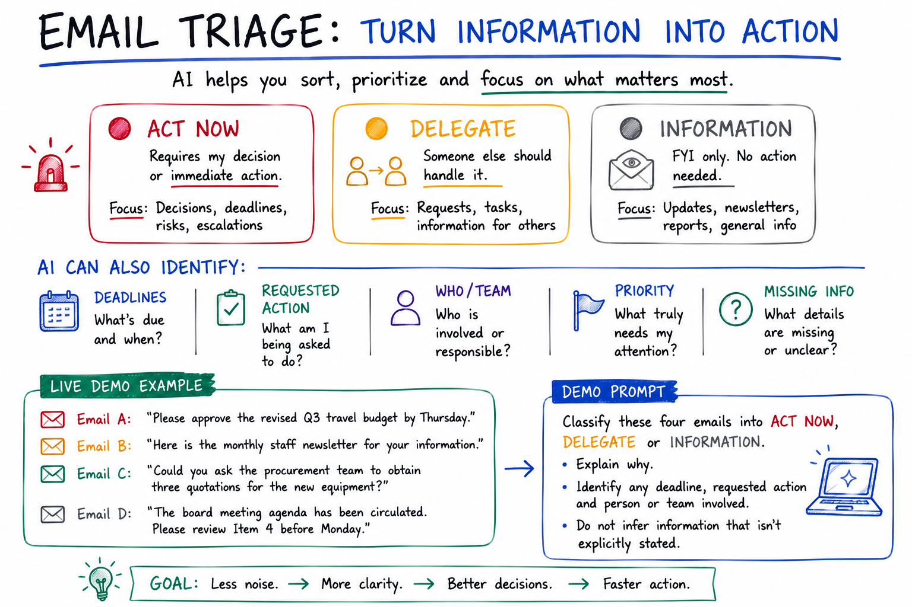
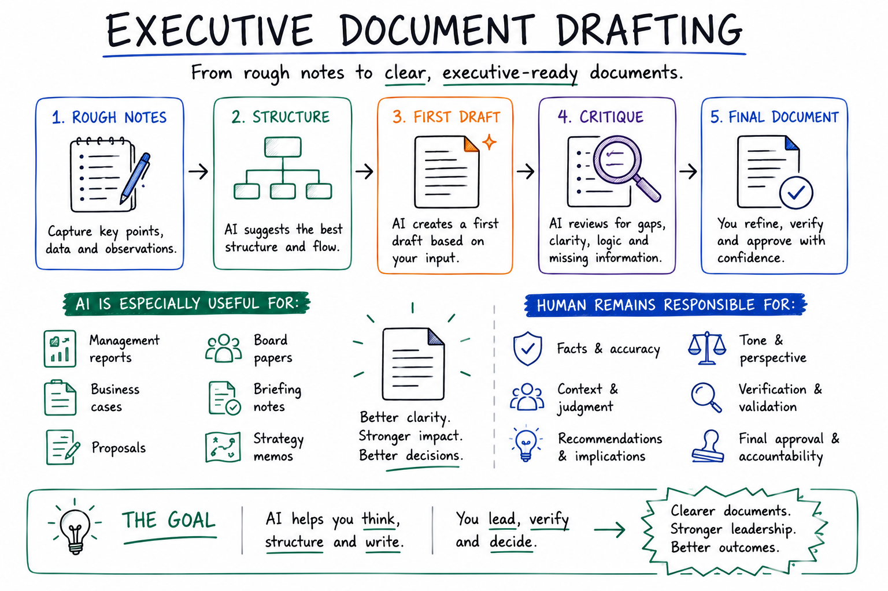
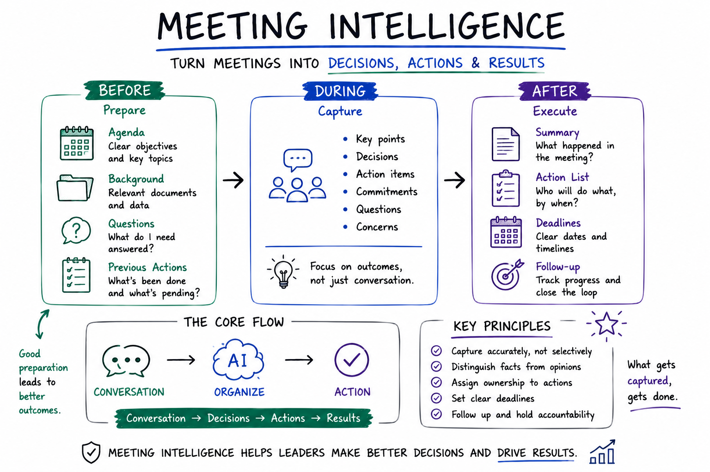
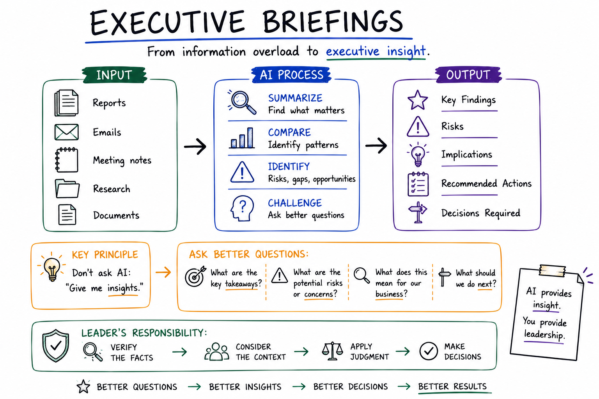
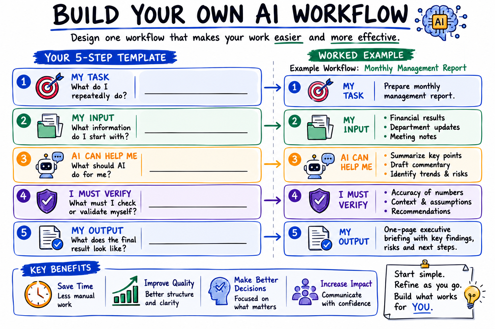

Which AI Tool
Should I Use?
There is no single “best” AI tool. Choose based on the task, your organization's ecosystem, the data involved, and the workflow you want to improve.
ChatGPT
General AI & knowledge workBroad-purpose writing, analysis, reasoning, file-based work and reusable workflows.
Gemini
Google Workspace & collaborationParticularly compelling when work already lives in Gmail, Docs, Drive and Meet.
Microsoft Copilot
Microsoft 365 productivityStrong fit for organizations centered on Outlook, Word, Excel, PowerPoint and Teams.
Claude
Writing, documents & analysisUseful for long-form writing, document synthesis, analysis and knowledge work.
DeepSeek
Reasoning & experimentationWorth evaluating for technical or cost-conscious use, with careful review before sensitive organizational use.
Ask a better question
“Which tool is best for this job, with this data, in this environment?”
Before You Paste:
Know Your Data
The tool name alone does not determine whether information is appropriate to share. Account type, plan, permissions, retention, organizational policy and the data itself all matter.
Public
- Public reports
- Public websites
- Public policies
- Generic business questions
Internal
- Internal reports
- Internal procedures
- Staff communications
- Operational information
Confidential
- Employee/personnel data
- Customer information
- Payroll information
- Passwords/credentials
- Confidential contracts
- Unreleased financial results

Suggested time: 8 minutes
Opening talking points:
- “One of the questions from Session 1 was: which AI tool should I actually use?”
- “The answer is not that one tool is always better than another. The right choice depends on the task, your organization's technology environment, the data involved, and the workflow you are trying to improve.”
- Briefly introduce each tool without turning the session into a product competition.
- ChatGPT: broad general-purpose knowledge work, writing, analysis and reusable workflows.
- Gemini: particularly attractive where an organization already works heavily in Google Workspace.
- Copilot: particularly attractive where Microsoft 365 is the organizational environment.
- Claude: strong option for long-form writing, documents and analytical knowledge work.
- DeepSeek: useful to know and evaluate, particularly for reasoning/technical experimentation, but organizational data policies should determine whether sensitive information can be used.
Ask participants: “Which AI tool are you currently using, if any—and what do you use it for?”
Transition: “Now that we know that tool choice matters, there is an even more important question: what information are we putting into these tools?”
From Inbox to Action
Don't start with “write my email.” Start by understanding the thread, then draft, verify and send.
Use this fictional/sanitized example. Do not use confidential organizational email in a consumer AI account.
EMAIL 1 — Operations Manager Subject: Q3 Operating Budget Review We have reviewed the Q3 operating budget and identified several areas where expenditure is above forecast. Utilities are approximately 18% above budget, while maintenance costs are 12% higher. Please review the figures and let me know whether you recommend reducing the proposed training budget to compensate. EMAIL 2 — Finance Manager I agree that utilities require attention, but I would not recommend reducing training at this stage. We should first determine whether the increase in utilities is temporary or structural. Could you provide an updated analysis before Friday?
Prompt 1 — Understand
Review this email thread and provide: 1. A three-sentence summary 2. The main issue being discussed 3. Decisions already made 4. Outstanding actions 5. Deadlines mentioned 6. What requires my attention Do not invent information that isn't contained in the emails.
Prompt 2 — Draft
Now draft a concise, professional response. I want to acknowledge the concerns, confirm that I will review the utility and maintenance costs, and avoid committing to any budget reduction until the analysis is complete. Use a professional, confident and collaborative tone. Do not invent figures, dates or commitments.
Suggested time: 10 minutes
Opening: “AI productivity is only useful if we use it responsibly. Before we become faster, we need to become safer.”
Walk through the three levels:
- Public: information already intended for public consumption.
- Internal: organizational information that should be handled according to company policy.
- Confidential: information that may create financial, legal, privacy or security risk if exposed.
- Do not paste passwords, credentials, personal employee information or confidential customer information into an AI tool unless the organization's approved environment and policy explicitly permit it.
- Account type and organizational controls matter. A consumer account and an organization-managed AI environment should not automatically be treated as equivalent.
- For today's demonstrations, use only the fictional/sanitized examples supplied in the presentation.
Transition: “With that safety foundation in place, let's look at a workflow where almost every manager has an opportunity to save time: email.”
From Information Overload
to Action
🔴 ACT NOW
Requires my decision or action.
🟡 DELEGATE
Someone else should handle it.
⚪ INFORMATION
No action required.
EMAIL A Please approve the revised Q3 travel budget by Thursday. EMAIL B Here is the monthly staff newsletter for your information. EMAIL C Could you ask the procurement team to obtain three quotations for the new equipment? EMAIL D The board meeting agenda has been circulated. Please review Item 4 before Monday.
Prompt
Classify these four emails into ACT NOW, DELEGATE or INFORMATION. For each email, explain why. Identify any deadline, requested action and person or team involved. Do not infer information that isn't explicitly stated. Then create a prioritized action list, starting with the most urgent item.

Suggested time: 18 minutes
Set up the demo: “I am not connecting Gemini to my email. I am going to use a fictional email thread and manually paste it into Gemini. This lets us see the workflow without giving an AI tool access to anyone's mailbox.”
Live demo steps:
- Click Open Gemini.
- Click Copy Email Thread and paste it into Gemini.
- Click Copy Prompt 1 and paste it beneath the email.
- Review the response with participants.
- Return to this presentation.
- Copy Prompt 2 and paste it into the same Gemini conversation.
- Review the draft response.
- Ask participants what they would verify before sending.
- AI can reduce the time required to understand a long thread.
- Separate understanding from drafting.
- Never allow a polished AI response to create a false sense of accuracy.
- The human remains responsible for facts, commitments, tone and the final decision to send.
Expected answers: numbers, deadlines, commitments, names, tone, missing context and whether the proposed response actually reflects the manager's intention.
Transition: “Now let's move from drafting one email to managing an entire inbox.”
From Rough Notes
to Executive Document
Fictional management notes
Q3 MANAGEMENT NOTES Revenue increased by 8% compared with the previous quarter. Operating expenses increased by 14%. Utility costs increased significantly. Maintenance expenses were also above forecast. Customer complaints increased during the quarter. Management is considering several cost-reduction measures. No decision has yet been made regarding the training budget.
Human remains responsible for
- Facts
- Business context
- Judgment
- Recommendations
- Approval
Prompt 1 — Draft
Act as a senior management consultant helping prepare an executive management memo. Convert these rough notes into a one-page executive briefing. Use the following structure: 1. Executive Summary 2. Key Findings 3. Areas of Concern 4. Management Implications 5. Recommended Questions for Management 6. Decisions Required Clearly distinguish facts from interpretations. Do not invent financial figures, causes or recommendations that are not supported by the information provided.
Prompt 2 — Critique
Now act as a critical reviewer. Examine your draft and identify: - Unsupported claims - Missing information - Statements that could be misleading - Questions management should answer - Information that should be verified before this is presented to senior leadership Do not rewrite the document yet.

Suggested time: 12 minutes
Opening: “Email overload is not just a writing problem. It is a prioritization problem.”
Before the demo: Ask participants to classify the four fictional emails themselves as ACT NOW, DELEGATE or INFORMATION.
Live demo steps:
- Click Open Gemini.
- Copy the four fictional emails.
- Copy and run the triage prompt.
- Compare Gemini's classification with the participants' predictions.
- Discuss any classification that requires managerial judgment.
Ask: “If an AI tool marks something as low priority but it relates to a major customer or financial issue, who is accountable?”
Answer: The manager remains accountable. AI classification is an aid, not authority.
Turn Meetings
Into Action
BEFORE
PrepareAgenda · background · questions · previous actions
DURING
CaptureDecisions · actions · commitments · unresolved issues
AFTER
ExecuteSummary · action list · deadlines · follow-up
MEETING: OPERATIONS & FINANCE REVIEW John: We need to reduce utility costs next quarter. Sarah: I recommend that we first review electricity consumption by department. David: I'll ask facilities to provide the consumption report. John: Good. Can we have that by Wednesday? Sarah: Once we have the report, finance can compare consumption against budget. John: Let's meet again Friday to review the findings. David: I'll also ask procurement to review the current electricity supplier contract. John: Good. Let's include that in Friday's discussion.
Analyze these meeting notes and produce: 1. Decisions made 2. Action items 3. Person responsible, if explicitly stated 4. Deadlines, if explicitly stated 5. Unresolved issues 6. Follow-up questions Do not infer responsibility or deadlines that are not explicitly stated.
Optional follow-up prompt
Turn the results into a concise professional follow-up email to the meeting participants. Do not add commitments, deadlines or responsibilities that are not explicitly stated.

Suggested time: 18 minutes
Opening: “Managers spend enormous amounts of time turning rough notes, emails and data into documents. AI is particularly useful as a first-draft engine—but the first draft is not the final decision.”
Live demo steps:
- Copy the fictional management notes.
- Open Gemini.
- Paste the notes and run Prompt 1 — Draft.
- Review the resulting executive memo with the group.
- Then run Prompt 2 — Critique.
- Highlight at least one unsupported or potentially misleading statement if the model produces one.
Key teaching point: AI should help with structure, language and synthesis. The manager remains responsible for business context, judgment, recommendations and approval.
Ask: “Would you put this AI-generated document directly into a board pack? Why or why not?”
Transition: “The same principle applies to meetings: the value is not simply producing notes; it is converting conversation into action.”
From Information Overload
to Executive Insight
Ask: “What changed? What is the evidence? What could go wrong? What information is missing? What should management decide?”
Reuse the fictional management notes from Slide 5.
You are preparing a briefing for a senior management team. Review the information provided and produce: 1. Three most important findings 2. Three potential risks 3. Business implications 4. Questions management should investigate 5. Recommended next steps 6. Decisions that may be required Clearly distinguish between FACTS, INTERPRETATION and RECOMMENDATION. Do not invent information.
Challenge the recommendation
What additional information would you need before making a confident recommendation? Group the missing information into: - Financial - Operational - Customer - Risk - Strategic Do not assume facts that are not provided.

Suggested time: 15 minutes
Opening: “How many meetings end with everyone agreeing on what to do—and then nobody is completely sure who is doing what?”
Live demo steps:
- Copy the fictional meeting notes.
- Open Gemini.
- Paste the notes and run the meeting-intelligence prompt.
- Review decisions, action items, owners and deadlines.
- Run the optional follow-up prompt to create a concise follow-up email.
- Meeting intelligence can reduce administrative work.
- It can make decisions and follow-up actions easier to find.
- It should not invent a person responsible for an action or create a deadline that was never agreed.
- Real meeting transcripts may contain sensitive information; recording, transcription and AI processing should follow organizational policy and applicable consent requirements.
Expected answer: Usually the decisions and actions—provided they are accurate and verified.
Stop Starting
From Scratch
Turn recurring tasks into reusable workflows. The goal is not more prompts; it is a repeatable way to improve your work.
Monday Morning
Priorities → weekly plan
Before a Meeting
Agenda + background → briefing
After a Meeting
Notes → actions + follow-up
Before a Report
Data + notes → draft briefing
End of Week
Activities → executive summary
THIS WEEK Monday: Budget review meeting Tuesday: Operations meeting Wednesday: Reviewed Q3 expenses Thursday: Met with procurement team Friday: Prepared management report Outstanding: - Review utility expenses - Follow up with procurement - Prepare Monday management briefing Priority: - Complete Q3 expense analysis - Prepare management briefing
Reusable prompt
Act as my executive assistant. Based only on the information provided, prepare my weekly executive review with four sections: 1. What I accomplished 2. Outstanding actions 3. Priorities for next week 4. Issues requiring my attention Keep it concise and executive-level. Do not invent activities or accomplishments.
Suggested time: 15 minutes
Opening: “Executives rarely need more information. They need better synthesis of the information they already have.”
Explain the transformation: Reports + emails + notes + research → AI-assisted synthesis → findings + risks + implications + questions + decisions.
Live demo steps:
- Reuse the fictional management notes from Slide 5.
- Open Gemini.
- Run the executive briefing prompt.
- Review the findings, risks and recommendations.
- Run the challenge prompt asking what information is missing.
Important distinction: Facts ≠ interpretation ≠ recommendation. Ask the AI to label them separately.
Ask: “Which missing piece of information could materially change this recommendation?”
Build Your Own
AI Workflow
Choose one recurring task from your real work. Use the five-part template below to design a simple, safe and repeatable AI-assisted process.
MY TASK
What do I repeatedly do?
MY INPUT
What information do I start with?
AI CAN HELP ME
What should AI do for me?
I MUST VERIFY
What must I check or validate myself?
MY OUTPUT
What should the final result look like?

Suggested time: 12 minutes
Opening: “The real productivity gain comes when we stop reinventing the same prompt every Monday.”
Explain personal workflows: A workflow is a repeatable sequence with a predictable input, a defined AI task, a human review step and a useful output.
Live demo steps:
- Copy the fictional weekly information.
- Open Gemini.
- Run the weekly executive-review prompt.
- Review the result.
- Ask participants how they would adapt the same structure to their own weekly routine.
Key teaching point: “We are not trying to create hundreds of prompts. We are trying to create a small number of reliable workflows that repeatedly save time.”
Your AI Productivity
Challenge
Before the next session, choose one recurring task and turn today's learning into a real experiment.
Choose ONE recurring task
- Capture — What information do you start with?
- Ask — What can AI help you do?
- Verify — What must you check?
- Improve — What would make the workflow better?
- Measure — How much time or effort did you save?
AI assists. Humans remain accountable.
Suggested time: 12 minutes
Participant exercise: Give participants approximately 6–7 minutes to choose one recurring task and complete the five-part workflow template.
Walk them through each field:
- My Task: What do I repeatedly do?
- My Input: What information do I start with?
- AI Can Help Me: What specific work should AI perform?
- I Must Verify: What must I personally check?
- My Output: What should the final result look like?
- “Is this task repeated often enough to justify a workflow?”
- “What part of the task is information processing rather than judgment?”
- “What could go wrong if AI gets this wrong?”
- “What must remain a human decision?”